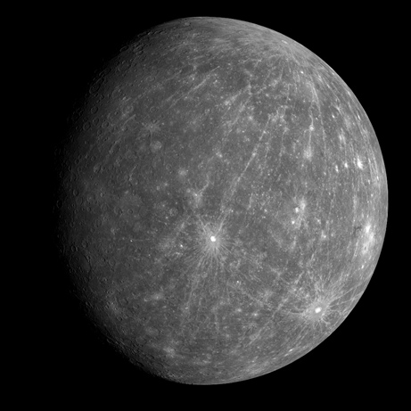

Mercury is the closest planet to the sun. As such, it circles the sun faster than all the other
planets, which is why Romans named it after their swift-footed messenger god.
The Sumerians also knew of Mercury since at least 5,000 years ago. It was often associated with
Nabu, the god of writing. Mercury was also given separate names for its appearance as both a morning
star and as an evening star. Greek astronomers knew, however, that the two names referred to the
same body, and Heraclitus, around 500 B.C., correctly thought that both Mercury and Venus orbited
the sun, not Earth.

Because the planet is so close to the sun, Mercury's surface temperature can reach a scorching 840
degrees Fahrenheit (450 degrees Celsius). However, since this world doesn't have much of a real
atmosphere to entrap any heat, at night temperatures can plummet to minus 275 F (minus 170 C), a
temperature swing of more than 1,100 degrees F (600 degree C), the greatest in the solar system.
Mercury is the smallest planet — it is only slightly larger than Earth's moon. Since it has no
significant atmosphere to stop impacts, the planet is pockmarked with craters. About 4 billion years
ago, an asteroid roughly 60 miles (100 kilometers) wide struck Mercury with an impact equal to 1
trillion 1-megaton bombs, creating a vast impact crater roughly 960 miles (1,550 km) wide. Known as the
Caloris Basin, this crater could hold the entire state of Texas. Another large impact may have helped
create the planet's odd spin.
As close to the sun as Mercury is, in 2012, NASA's MESSENGER spacecraft discovered water ice in the
craters around its north pole, where regions may be permanently shaded from the heat of the sun. The
southern pole may also contain icy pockets, but MESSENGER's orbit did not allow scientists to probe the
area. Comets or meteorites may have delivered ice there, or water vapor may have outgassed from the
planet's interior and frozen out at the poles.
Mercury speeds around the sun every 88 Earth days, traveling through space at nearly 112,000 mph
(180,000 km/h), faster than any other planet. Its oval-shaped orbit is highly elliptical, taking Mercury
as close as 29 million miles (47 million km) and as far as 43 million miles (70 million km) from the
sun. If one could stand on Mercury when it is nearest to the sun, it would appear more than three times
as large as it does when viewed from Earth.
Oddly, due to Mercury's highly elliptical orbit and the 59 Earth-days or so it takes to rotate on its
axis, when on the scorching surface of the planet, the sun appears to rise briefly, set, and rise again
before it travels westward across the sky. At sunset, the sun appears to set, rise again briefly, and
then set again.